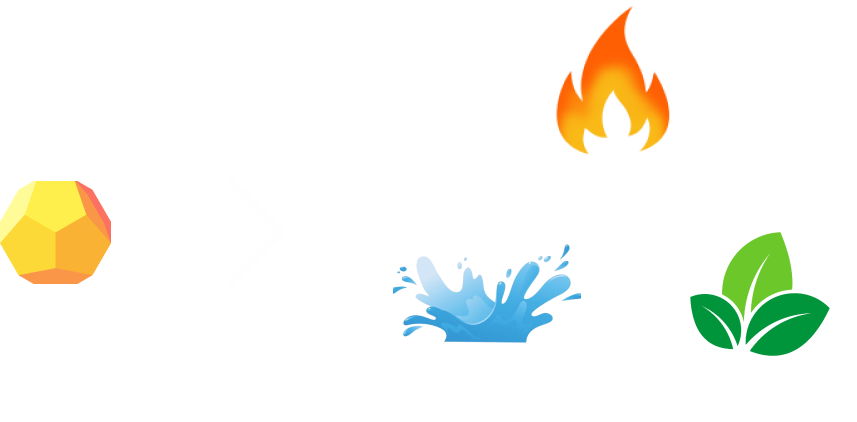

Role para baixo para ver as regras
Buscando adversário digno

Role para baixo para ver as regras
Elemental Clash é um jogo de cartas dividido em turnos, onde o baralho é composto por elementos, os jogadores devem jogar um elemento na mesa afim de vencer o elemento jogado pelo oponente.
Cada jogador recebe um baralho de 14 cartas, sendo 4 cartas do elemento água, 4 do fogo, 4 de planta e 2 de éter. Dessas 14 cartas, 3 são sorteadas e colocadas na mão do jogador.
O jogador deve jogar uma carta e aguardar o oponente jogar a carta dele, ao jogar, verifica-se qual das cartas venceram e então o jogador que venceu ganha 1 ponto e será o primeiro a jogar na rodada seguinte.
O jogador que ganhar 5 pontos primeiro vence o duelo.
A ordem de qual elemento ganha de qual outro elemento é mostrado na imagem abaixo, fogo vence planta, planta vence água e água vence fogo e por fim, o éter vence todos os outros elementos (use-o com sabedoria).

Caso os dois jogadores joguem um mesmo elemento, isso causará um empate e ninguém irá pontuar na rodada, então o jogador que foi o primeiro a jogar na rodada anterior será o primeiro a jogar novamente.
Divirta-se!!!